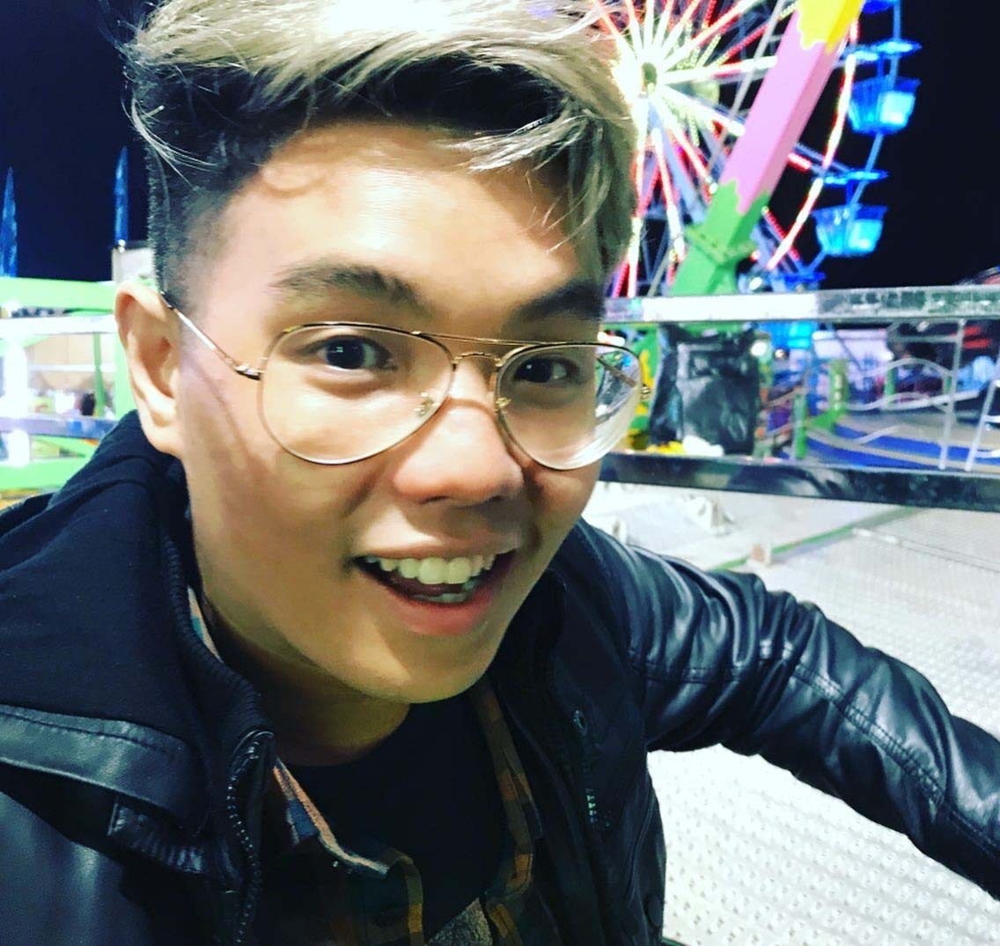
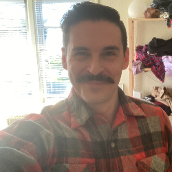
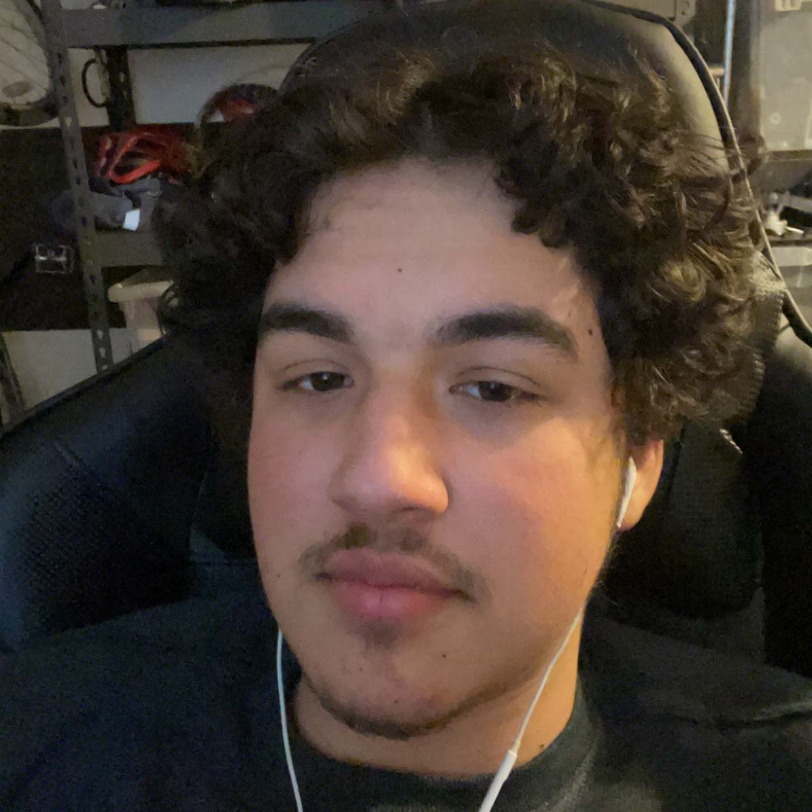

About Us
- Software Engineer
- With this program, my goals are to learn a couple new technologies as well as get more experience working in a team of developers.
- I enjoy playing poker MTTs, playing team based competitive games, and learning new things.
- Fun Fact: I’ve cashed in over a dozen poker tournaments with five figure payouts each.

- Software Engineer
- The goals I have for myself include learning how to code more advanced programs while creating an appealing UX/UI.
- I enjoy collecting things like music boxes, cooking lavish dinners, and driving high performance vehicles.
- Fun Fact: I have never played Blackjack sober...until now.

- Software Engineer
- My goals for learning to code are that I wish to pivot to a more flexible and rewarding career.
- I enjoy cycling and reading.
- I am the world’s most inconsistent Blackjack player.

- Software Engineer
- I hope to become more proficient with integration of CSS and JavaScript
- Hobbies: writing music, listening to music, and playing video-games
- Fact: Made money online betting